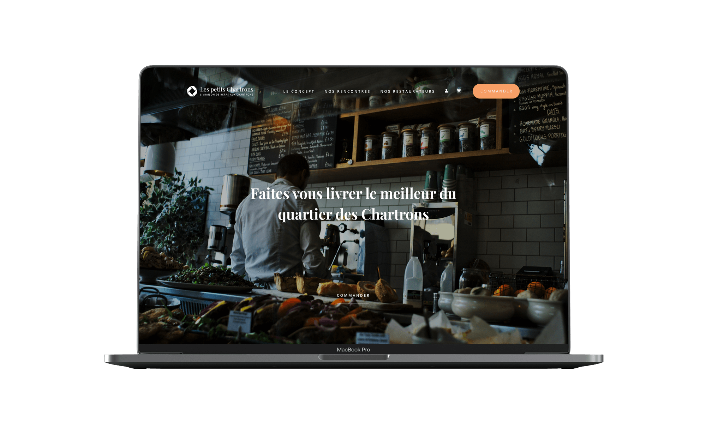
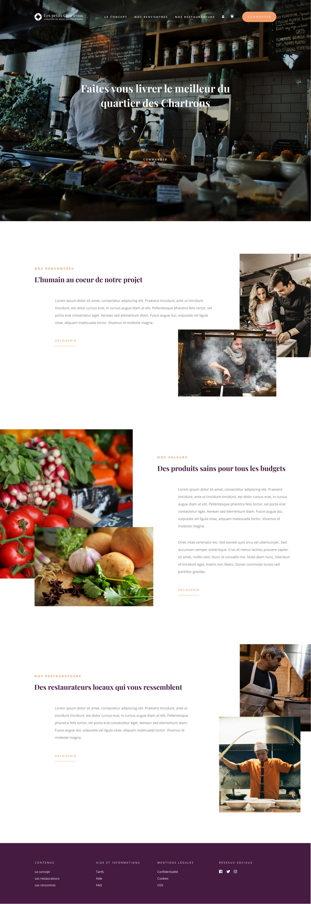
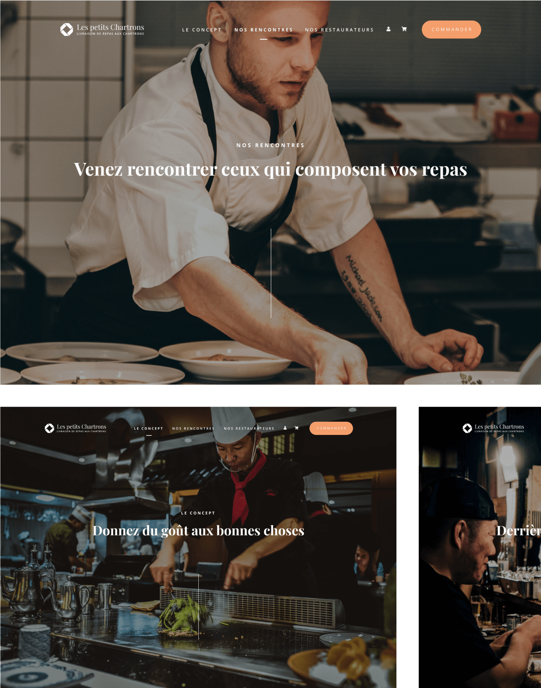
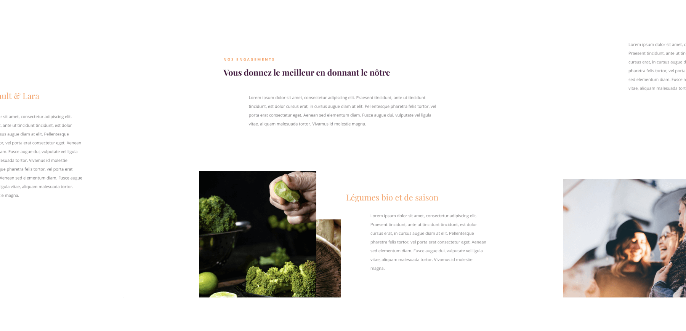
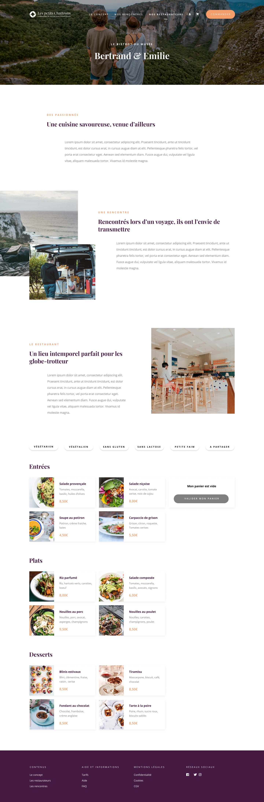
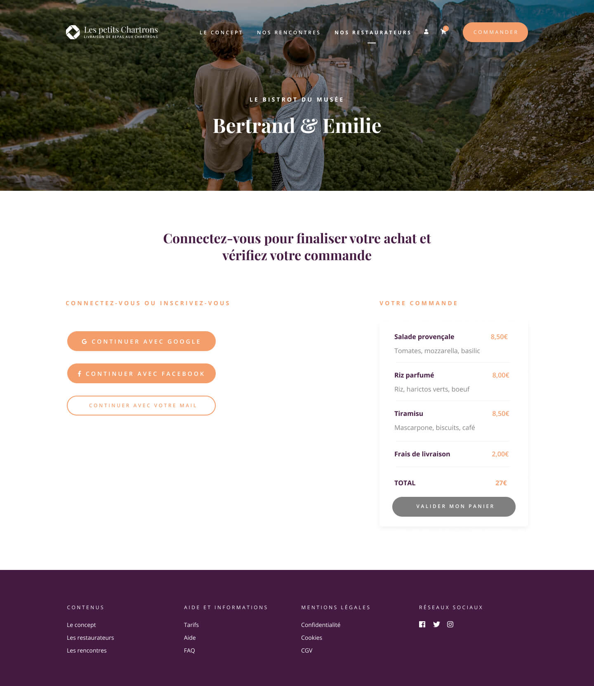
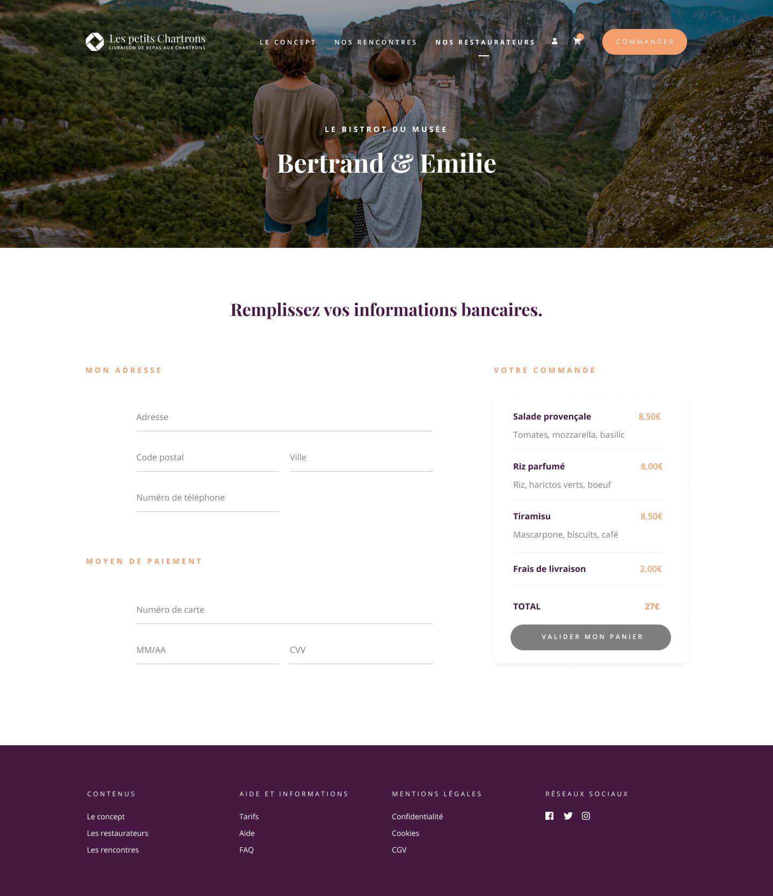
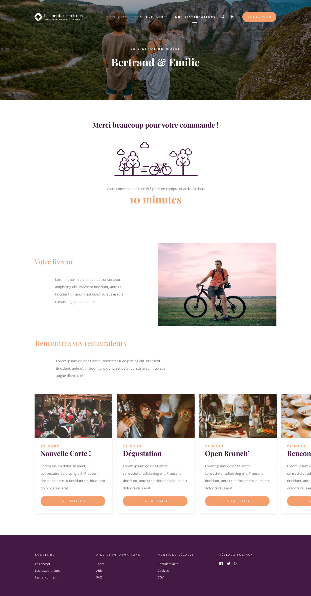

Les petits Chartrons
Web design
Année
2019
équipe
Martin Delanoë
Antonin Stephany
Dans un monde où l'uberisation du travail fait rage, les services tels que Deliveroo, Takeeateasy, Alloresto et Ubereats s'imposent comme le lien entre les restaurateurs et leurs publics.
Dans ce contexte, 20 restaurants du quartier des Chartrons à Bordeaux décident d'utiliser la technologie du web pour mettre en place un service de livraison de repas qui soit un service de proximité et d'engagement des clients.
Si au départ l'idée est d'avoir une équipe de livreurs locaux et impliqués, elle est aussi de promouvoir les restaurants du quartier auprès des gens (du quartier) et de les faire venir dans ces mêmes restaurants
Typographie
Playfair Display
regular - bold
ABCDEFGHIJKLMNOPQRSTUVWXYZ
abcdefghijklmnopqrstuvwxyz
0123456789
abcdefghijklmnopqrstuvwxyz
0123456789
Open Sans
regular - bold
ABCDEFGHIJKLMNOPQRSTUVWXYZ
abcdefghijklmnopqrstuvwxyz
0123456789
abcdefghijklmnopqrstuvwxyz
0123456789
Couleurs
Projet







